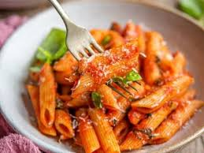

Penne-Passata

Cheap to make, and serves several without skimping on taste!
Ingredients
- 1 Red Onion
- 1 Brown Onion
- 1 Red Capsicum
- 1 Green Capsicum
- 1 Bottle of Passata
- 1 Bunch of Basil
- Crushed Garlic
- Chicken stock
- 500g Lean Mince
- 500g Penne Pasta
- OLive Oil
Instructions
- Dice Onions
- Dice Capsicums
- Dice Basil
- Heat pan on high
- Drizzle pan with olive oil
- add diced ingredients
- add mince
- stir until mince turns brown
- add 200ml chicken stock
- when stock begins to evaporate/boil add passata
- stir thoroughly on a high heat for 5-10 minutes
- and another 100ml of chicken stock>
- turn heat down to low and let simmer
- Boil kettle and add 2 litres of boiled water to a pot
- add penne to pot
- salt the pot so the penne doesn't stick to it and burn
- take penne off heat when its soft when poked with a fork
- drain pot of water and add penne to simmering sauce
- Serve
Back to Recipes